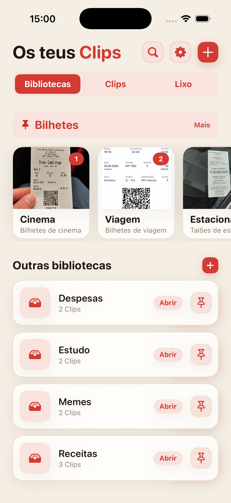
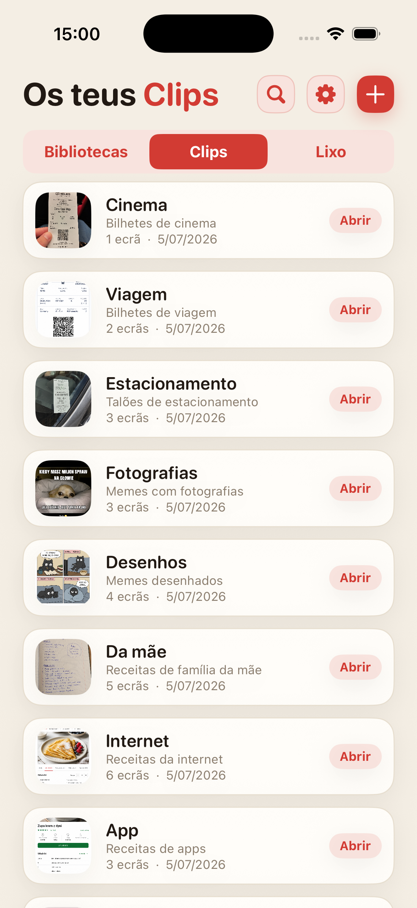
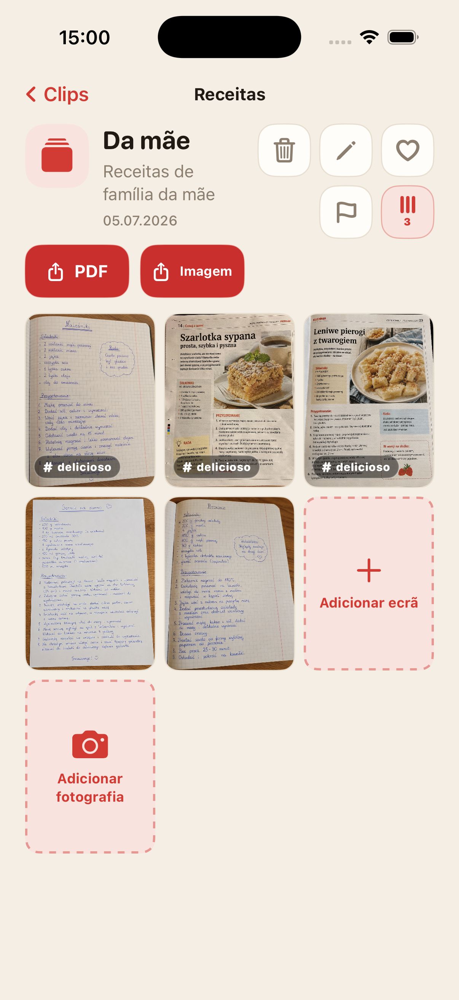
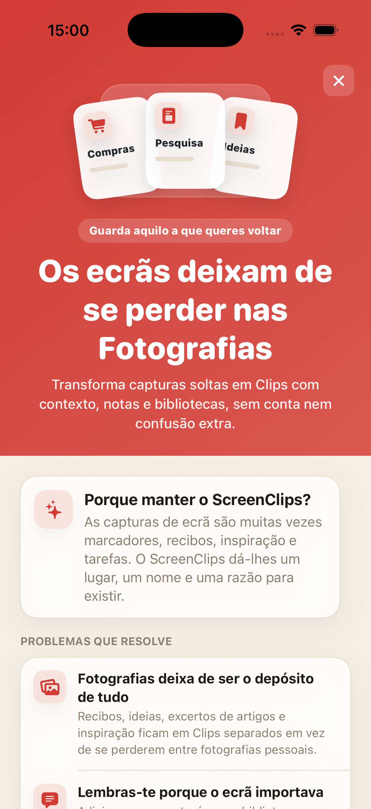

A captura perde-se no meio de tudo
Guardas algo importante e, uma semana depois, estás a percorrer as Fotografias como se fossem uma pasta antiga.
Transforma capturas de ecrã soltas em Clips com nome, nota e a sua própria biblioteca. Sem conta, sem cloud e sem a caça diária no rolo da câmara.

Recibos, receitas, bilhetes, ideias e excertos de artigos acabam entre selfies, memes e imagens aleatórias. A cloud existe, mas a morada do hotel da semana passada pode continuar impossível de encontrar.
Guardas algo importante e, uma semana depois, estás a percorrer as Fotografias como se fossem uma pasta antiga.
A imagem sozinha muitas vezes não chega. O ScreenClips dá espaço para nome e nota.
Compras, trabalho, viagens e estudo merecem sítios próprios, não uma única pilha gigante nas Fotografias.
Junta receitas, recibos, bilhetes, pesquisa, apontamentos de estudo ou qualquer coisa que queiras voltar a encontrar.
Um Clip reúne tudo à volta de uma coisa concreta. Tem nome, descrição e as suas próprias capturas.
Abre a biblioteca, escolhe o Clip e continua onde ficaste. Sem longas viagens pelo rolo da câmara.

O ScreenClips não tenta adivinhar tudo por ti. Dá-te uma estrutura simples: biblioteca para o tema, Clip para o assunto, capturas e imagens lá dentro.
Reúne conteúdo em Clips e acrescenta mais quando o tema cresce.
Quando um Clip precisa de ser enviado ou guardado fora da app, transforma-se num ficheiro limpo.
Onde antes havia só scroll e suspiros, tens favoritos, sinalizações e ordem.

O ScreenClips funciona localmente. Não precisas de criar conta nem de entregar recibos, notas e planos a mais um serviço só para teres ordem.
O Premium não torna a app mais complicada. Dá apenas mais espaço para bibliotecas, Clips e capturas. O preço aparece na App Store.
Transferir naApp Store
Não. Quando removes uma imagem de um Clip, o original continua nas Fotografias.
Sim. O ScreenClips foi feito como organizador local no iPhone.
Não. O ScreenClips não exige conta para organizares Clips.
Sim. Quando pertencem ao mesmo Clip, podes adicionar capturas de ecrã e fotografias.
O ScreenClips organiza aquilo que guardaste para "mais tarde". Desta vez, o "mais tarde" é mesmo encontrável.
Transferir naApp Store